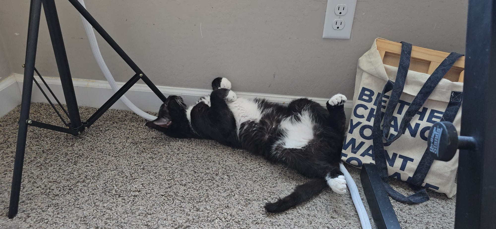

Our latest update
Where we are today
We are still in our home with our 27 cats. We have decided to do everything we can to preserve our home and keep our family together.
We have not yet restored a stable and predictable income. In our current situation, even a gift of $100 makes a real and significant difference in our daily lives.
Our home is at risk of an auction process because the mortgage, which is held in another person’s name, has not been paid for several months. If the process begins as expected, we understand that it should take at least three months. That gives us a window in which to act, but we are in a genuine race against time.
Our immediate priorities
- Pay the mortgage arrears and stop the auction process.
- Resume the regular monthly payments.
- Transfer the home into both of our names through suitable financing or a sufficiently large down payment.
Our immediate fundraising goal is $25,000: an estimated $20,000 to reinstate the mortgage and $5,000 to pay our most urgent overdue household bills. We do not yet know the exact amount required to reinstate the mortgage, so the $20,000 figure is an estimate.
Beyond this immediate milestone, one solution we are exploring would require a down payment of approximately $100,000. It may allow us to become the owners of our home despite not having a conventional financial history, and to continue caring for our cats in a stable, healthy, and secure environment.
Health and healing
Sascha is receiving close professional care
Sascha is going through a profound depression accompanied by extremely severe generalized anxiety. He also experienced a very serious reaction to an antidepressant. Thankfully, the cause was identified and the medication was discontinued. Our mental-health professional is monitoring him closely and gradually adjusting his treatment.
These past weeks have been among the most difficult and frightening of our lives. I remain constantly by his side. In recent days, however, I have begun to see small signs of improvement. Sascha is slowly beginning to communicate with some people again and to discover that, in this ordeal, he is encountering above all love, compassion, and support.
We pray together five to eight times each day. Even when Sascha cannot yet see a solution that would allow all of us to remain together, he continues to pray, follow his treatment, and move forward one day at a time.
Rebuilding our future
We are actively creating new sources of income
I have completed my examinations to become a life and health insurance agent. I have already been accepted for commission-based work and am completing the final administrative steps required for my licenses. I am learning a great deal about money, financial protection, and the possibilities for rebuilding. Find out more about my financial-education work.
Sascha and I have also developed valuable practical skills. With the help of artificial intelligence, we can now design web and mobile applications, websites, databases, forms, authentication and notification systems, email campaigns, training programs, and online communities. This campaign website is one example of what we have built together. Have a look at saschagorokhoff.com and gemmaserenity.com to see more of what we have created entirely in-house, with AI writing the code for us.
I can create custom digital tools for individuals, entrepreneurs, and organizations. If you know a person or business that needs a website, an application, an automated system, or another digital solution, an introduction could truly change our lives right now. You can explore my AI services here.
We have been without a car since December 17, which makes every trip much more complicated. Even so, doors continue to open in unexpected ways.
Meet our family
The cats at the heart of our home
They each have their own personality, routines, friendships, and special way of bringing love into our lives. These are some of the family members your support helps us keep safe and together.



The words I carry with me
My favorite verse · Proverbs 3:24–26
This is the verse that has stayed with me since childhood and continues to give me strength.
“When you lie down, you will not be afraid; when you lie down, your sleep will be sweet. Have no fear of sudden disaster or of the ruin that overtakes the wicked, for the Lord will be at your side and will keep your foot from being snared.”
How you can help
Every form of support creates breathing room
Every contribution, however modest, helps us feed the cats, cover daily necessities, and gain the time we need to stabilize our situation. For larger international gifts, you can use my Wise referral link to arrange a transfer with minimal fees.
You can also help by sharing this campaign, introducing us to potential clients, or connecting us with people who may be able to support our plan.
Please continue to pray for us, for our cats, for Sascha’s healing and mental health, and for the clients and partners who can help us through this period.
I firmly believe that we are moving toward the most beautiful chapter of our lives: a chapter of healing, restored security, abundance, generosity, and positive impact in service of people and animals.
Thank you for your love, prayers, shares, and help. We continue moving forward in faith, ready to receive the next part of our story.
Mise à jour en français
Voici où nous en sommes aujourd’hui
Merci, du fond du cœur, pour votre soutien. Il a une valeur immense pour nous.
Nous sommes toujours dans notre maison, avec nos 27 chats. Nous avons décidé de nous battre pour préserver notre foyer et garder notre famille ensemble. Nous n’avons pas encore retrouvé de revenu stable et prévisible : dans notre situation actuelle, même une aide de 100 dollars a un impact concret et considérable sur notre quotidien.
Notre maison est malheureusement menacée par une procédure de vente aux enchères, car l’hypothèque n’a plus été payée depuis plusieurs mois par la personne au nom de laquelle elle se trouve. Si la procédure commence comme prévu, elle devrait durer au minimum trois mois. Nous disposons donc encore d’une fenêtre d’action, mais nous sommes engagés dans une véritable course contre le temps.
Notre priorité immédiate est de réunir suffisamment d’argent pour :
- payer les arriérés hypothécaires et interrompre la procédure de vente ;
- reprendre les mensualités régulières ;
- transférer ensuite la maison à nos deux noms, soit grâce à un financement approprié, soit en réunissant un apport suffisamment important.
Notre objectif immédiat est de réunir 25 000 dollars : environ 20 000 dollars pour remettre l’hypothèque à jour et 5 000 dollars pour régler les factures les plus urgentes de la maison, dont certaines sont très en retard. Nous ne connaissons pas encore le montant exact nécessaire pour remettre l’hypothèque à jour ; les 20 000 dollars constituent donc une estimation.
Au-delà de cet objectif immédiat, l’une des solutions que nous explorons nécessiterait environ 100 000 dollars d’apport. Cela pourrait nous permettre de devenir propriétaires de notre maison malgré l’absence d’un historique financier conventionnel, et de continuer à prendre soin de nos chats dans un environnement stable, sain et sécurisé.
La santé et la guérison de Sascha
Sur le plan personnel, Sascha traverse une dépression profonde accompagnée d’une anxiété généralisée extrêmement sévère. Il a également subi une réaction très grave à un médicament antidépresseur. La cause a heureusement été identifiée et le médicament supprimé. Il est suivi de très près par notre professionnel de santé mentale, qui ajuste progressivement son traitement.
Ces dernières semaines ont été parmi les plus éprouvantes et les plus terrifiantes de notre vie. Je reste constamment auprès de lui. Depuis quelques jours, je commence néanmoins à voir de petits signes d’amélioration. Sascha recommence doucement à communiquer avec certaines personnes et à découvrir que, dans cette épreuve, il rencontre surtout de l’amour, de la compassion et du soutien.
Nous prions ensemble cinq à huit fois par jour. Même lorsque Sascha ne parvient pas encore à voir une solution qui nous permettrait de rester tous ensemble, il continue de prier, de suivre son traitement et d’avancer un jour après l’autre.
Nous reconstruisons activement notre avenir
De mon côté, j’ai terminé mes examens pour devenir agente d’assurance-vie et santé. J’ai déjà été acceptée pour exercer à la commission et je termine actuellement les dernières étapes administratives nécessaires à l’obtention de mes licences. Cette activité peut générer des commissions importantes selon les contrats et les solutions mises en place pour les clients. J’apprends énormément sur l’argent, la protection financière et les possibilités de reconstruction. Découvrez-en davantage sur mon travail d’éducation financière.
J’ai également développé une compétence très précieuse : Sascha et moi sommes désormais capables de concevoir, avec l’aide de l’intelligence artificielle, des applications web et mobiles, des sites internet, des bases de données, des formulaires, des systèmes d’authentification et de notification, des campagnes d’e-mails, des formations et des communautés en ligne. Ce site de campagne est un exemple de ce que nous avons construit ensemble. Visitez saschagorokhoff.com et gemmaserenity.com pour découvrir davantage ce que nous avons créé entièrement en interne, avec l’aide de l’IA qui a écrit tout le code pour nous.
Je peux donc également créer des outils numériques sur mesure pour des particuliers, des entrepreneurs ou des organisations. Si vous connaissez une personne ou une entreprise ayant besoin d’un site, d’une application, d’un système automatisé ou d’une solution numérique particulière, une mise en relation pourrait aujourd’hui véritablement changer notre vie. Vous pouvez découvrir mes services d’intelligence artificielle ici.
Malgré tout ce qui nous entoure, je continue de voir des solutions et des miracles. J’ai même créé une application privée dans laquelle je consigne toutes les aides financières, matérielles et logistiques que nous recevons. Nous n’avons plus de voiture depuis le 17 décembre, ce qui rend chaque déplacement beaucoup plus complexe, et pourtant des portes continuent de s’ouvrir de manière souvent inattendue.
Il s’agit de mon passage préféré, celui qui m’accompagne depuis l’enfance.
« Si tu te couches, tu seras sans crainte,
— Proverbes 3:24-26
Et quand tu seras couché, ton sommeil sera doux.
Ne redoute ni une terreur soudaine,
Ni une attaque de la part des méchants ;
Car l’Éternel sera ton assurance,
Et il préservera ton pied de toute embûche. »
Comment nous aider
Chaque contribution, même modeste, nous aide à nourrir les chats, assurer les nécessités quotidiennes et gagner le temps indispensable pour stabiliser notre situation. Pour les dons internationaux plus importants, vous pouvez utiliser mon lien de parrainage Wise afin d’organiser un transfert avec des frais minimaux.
Vous pouvez aussi nous aider en partageant notre campagne, en nous mettant en relation avec des clients potentiels ou avec des personnes susceptibles de soutenir notre projet.
Continuez, s’il vous plaît, à prier pour nous, pour nos chats, pour la guérison et la santé mentale de Sascha, ainsi que pour l’arrivée de clients et de partenaires qui nous permettront de traverser cette période.
Je crois fermement que nous nous dirigeons vers le plus beau chapitre de notre vie : un chapitre de guérison, de sécurité retrouvée, d’abondance, de générosité et d’impact positif au service des êtres humains et des animaux.
Merci pour votre amour, vos prières, vos partages et votre aide. Nous continuons d’avancer avec foi, prêts à recevoir la suite de notre histoire.
Our promise of transparency
Clear, honest reporting
This is an independently hosted personal fundraiser, not a registered charity. Contributions are personal gifts and are not represented as tax-deductible.
We report financial and substantial in-kind assistance separately and protect private medical, financial, and identifying information.
Trust matters too much for anything less.